Implementación de Motores de Bases de Datos con Docker
El proyecto consiste en implementar y ejecutar cuatro motores de bases de datos mediante Docker:
Cada motor cuenta con su propia configuración, almacenamiento persistente y puerto de conexión.
También se realizaron pruebas de conexión mediante DBeaver y verificaciones para comprobar que los servicios funcionan correctamente.
Autor: Jairo de Jesús Varón Hernández Programa: Ingeniería de Sistemas Proyecto: IA Lab - Motores de Bases de Datos
| Herramienta | Uso |
|---|---|
| Windows | Sistema operativo principal |
| WSL / Ubuntu | Entorno Linux |
| Docker | Ejecución de los motores |
| Docker Compose | Configuración de los servicios |
| DBeaver | Conexión y administración de las bases de datos |
23 de agosto de 2026
Las bases de datos son fundamentales para almacenar y administrar la información utilizada por diferentes sistemas y aplicaciones.
En este proyecto se implementaron cuatro motores de bases de datos: MySQL, PostgreSQL, SQL Server y Oracle XE, utilizando Docker para facilitar su instalación, configuración y ejecución.
Cada motor fue configurado de forma independiente, con sus respectivos puertos y almacenamiento persistente. Posteriormente, se verificó su funcionamiento mediante Docker y se realizaron conexiones desde DBeaver.
Este informe presenta de forma resumida el proceso realizado, las configuraciones utilizadas, las pruebas realizadas y las evidencias obtenidas durante la implementación.
Implementar y configurar cuatro motores de bases de datos mediante Docker, permitiendo su ejecución, almacenamiento persistente y conexión desde DBeaver.
Para realizar el proyecto se utilizaron las siguientes herramientas y tecnologías:
Windows, como sistema operativo principal del equipo.
WSL (Windows Subsystem for Linux), utilizado para disponer de un entorno Linux desde Windows.
Docker, utilizado para ejecutar cada motor de base de datos dentro de un contenedor independiente.
Docker Compose, utilizado para definir y administrar la configuración de cada servicio mediante archivos docker-compose.yml.
DBeaver, utilizado como cliente gráfico para realizar las conexiones, consultar y comprobar el funcionamiento de las bases de datos.
Los motores implementados fueron:
| Motor | Versión | Puerto |
|---|---|---|
| MySQL | 8.0 | 3306 |
| PostgreSQL | 17 | 5432 |
| SQL Server | 2022 | 1433 |
| Oracle XE | 21c | 1521 |
La solución utiliza Windows como sistema principal, WSL como entorno Linux y Docker para ejecutar los cuatro motores de bases de datos en contenedores independientes.
Los servicios se encuentran organizados dentro del proyecto ia-lab y pueden ejecutarse de manera independiente o simultánea.
La comunicación se realiza de la siguiente manera:
Windows
│
▼
WSL / Ubuntu
│
▼
Docker
│
├── MySQL
├── PostgreSQL
├── SQL Server
└── Oracle XE
Los puertos de los contenedores se publican hacia el entorno local, permitiendo que herramientas como DBeaver se conecten a las bases de datos desde Windows.
Los servicios utilizan una red de Docker para facilitar la comunicación entre los contenedores cuando es necesario.
Cada motor mantiene su propio contenedor y configuración, mientras que los datos se almacenan mediante directorios persistentes.
| Motor | Puerto |
|---|---|
| MySQL | 3306 |
| PostgreSQL | 5432 |
| SQL Server | 1433 |
| Oracle XE | 1521 |
Estos puertos permiten realizar las conexiones desde DBeaver utilizando 127.0.0.1 como dirección del servidor.
┌─────────────────────────────────────────────┐
│ WINDOWS │
│ │
│ DBeaver │
└─────────────────────┬───────────────────────┘
│
127.0.0.1
│
┌─────────────────────▼───────────────────────┐
│ WSL / UBUNTU │
│ │
│ Docker │
│ │
│ ┌──────────┐ ┌────────────┐ │
│ │ MySQL │ │ PostgreSQL │ │
│ │ :3306 │ │ :5432 │ │
│ └──────────┘ └────────────┘ │
│ │
│ ┌──────────────┐ ┌────────────┐ │
│ │ SQL Server │ │ Oracle XE │ │
│ │ :1433 │ │ :1521 │ │
│ └──────────────┘ └────────────┘ │
│ │
└─────────────────────────────────────────────┘
La arquitectura permite mantener los cuatro motores separados, facilitar su administración y realizar conexiones desde herramientas externas como DBeaver.
El proyecto se encuentra organizado dentro del directorio ia-lab. La estructura separa los archivos de configuración de los datos generados por los motores de bases de datos.
La organización principal es:
ia-lab/
├── data/
└── services/
└── motores-bd/
Dentro de services/motores-bd/ se encuentra la configuración de los cuatro motores:
motores-bd/
├── mysql/
├── postgres/
├── mssql/
├── oracle/
├── start-all.sh
├── stop-all.sh
└── README.md
Cada directorio contiene la configuración y documentación correspondiente a su motor.
Los datos de los motores se almacenan en el directorio:
~/ia-lab/data/
Dentro de este directorio se encuentran los espacios utilizados para la persistencia de MySQL, PostgreSQL, SQL Server y Oracle.
Esta configuración permite conservar los datos aunque los contenedores sean detenidos o reiniciados.
Cada motor utiliza un archivo docker-compose.yml para definir su servicio y un archivo .env para las variables de configuración.
La estructura es:
motores-bd/
├── mysql/
│ ├── .env
│ └── docker-compose.yml
├── postgres/
│ ├── .env
│ └── docker-compose.yml
├── mssql/
│ ├── .env
│ └── docker-compose.yml
└── oracle/
├── .env
└── docker-compose.yml
El proyecto incluye dos scripts para facilitar la administración de los servicios:
| Archivo | Función |
|---|---|
start-all.sh |
Inicia los motores de bases de datos |
stop-all.sh |
Detiene los motores de bases de datos |
Estos scripts permiten administrar los servicios sin tener que iniciar o detener cada contenedor individualmente.
A continuación se presenta la estructura real del proyecto obtenida desde WSL.
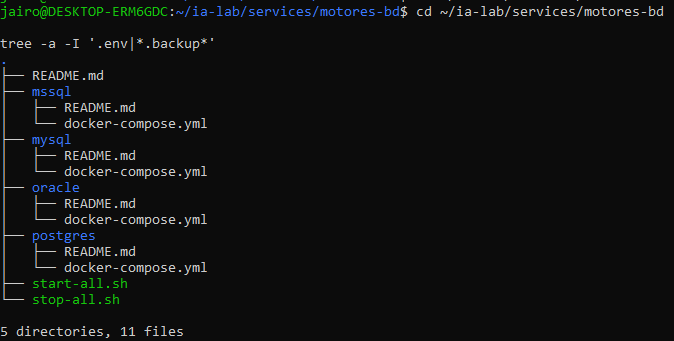
La captura muestra la organización de los servicios, archivos de configuración y scripts principales del proyecto.
MySQL se implementó mediante Docker utilizando la imagen oficial mysql:8.0. El servicio se configuró para ejecutarse de forma independiente y permitir conexiones desde el equipo.
cd ~/ia-lab/services/motores-bd/mysql
cat docker-compose.yml
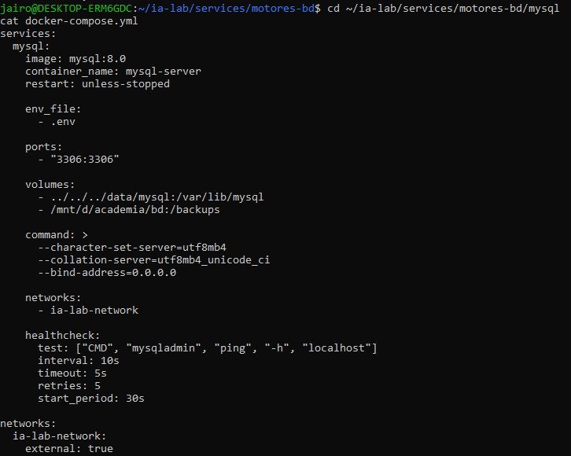
Docker Compose permite definir y ejecutar el contenedor de MySQL junto con su configuración de forma sencilla y repetible.
cd ~/ia-lab/services/motores-bd/mysql
sudo docker compose config
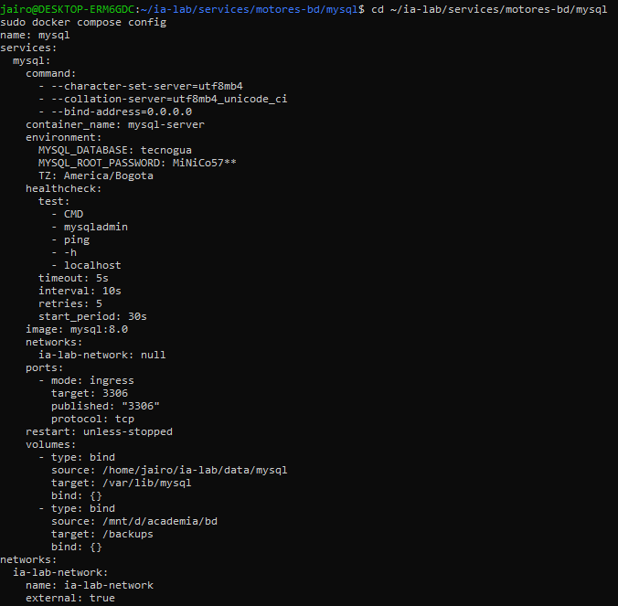
Las credenciales y otros valores de configuración se manejan mediante un archivo .env, evitando escribir directamente estos datos dentro del archivo docker-compose.yml.
cd ~/ia-lab/services/motores-bd/mysql
ls -la
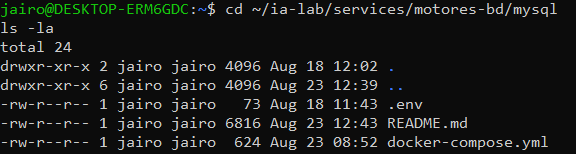
Los datos de MySQL se almacenan en el directorio persistente:
~/ia-lab/data/mysql
Esto permite conservar la información de la base de datos aunque el contenedor sea detenido o reiniciado.
sudo ls -lah ~/ia-lab/data/mysql
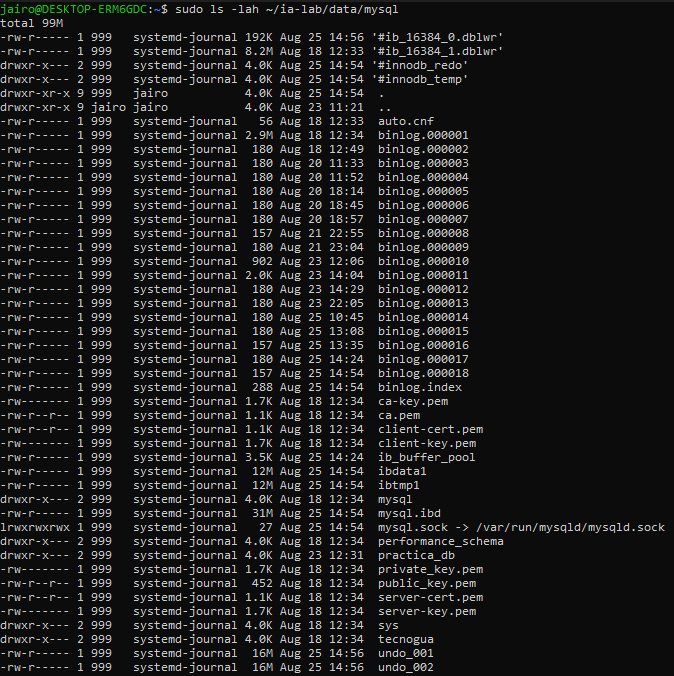
El contenedor utilizado para MySQL se identifica como:
mysql-server
Su funcionamiento se comprobó mediante Docker.
sudo docker ps --filter "name=mysql-server" \
--format "table {{.Names}}\t{{.Image}}\t{{.Status}}\t{{.Ports}}"
El resultado esperado debe mostrar el contenedor activo y, después de iniciar correctamente, en estado healthy.
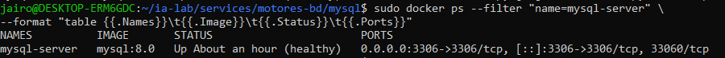
Para las pruebas se utilizó la base de datos:
tecnogua
sudo docker exec -it mysql-server \
mysql -uadmin -p
El comando solicitará la contraseña configurada para MySQL.
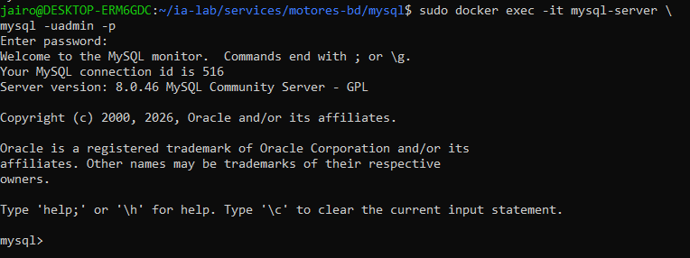
La conexión a MySQL se realizó desde DBeaver utilizando los siguientes datos:
| Parámetro | Valor |
|---|---|
| Motor | MySQL |
| Host | 127.0.0.1 |
| Puerto | 3306 |
| Base de datos | tecnogua |
| Usuario | admin |
La conexión fue comprobada desde DBeaver y se obtuvo una conexión exitosa.
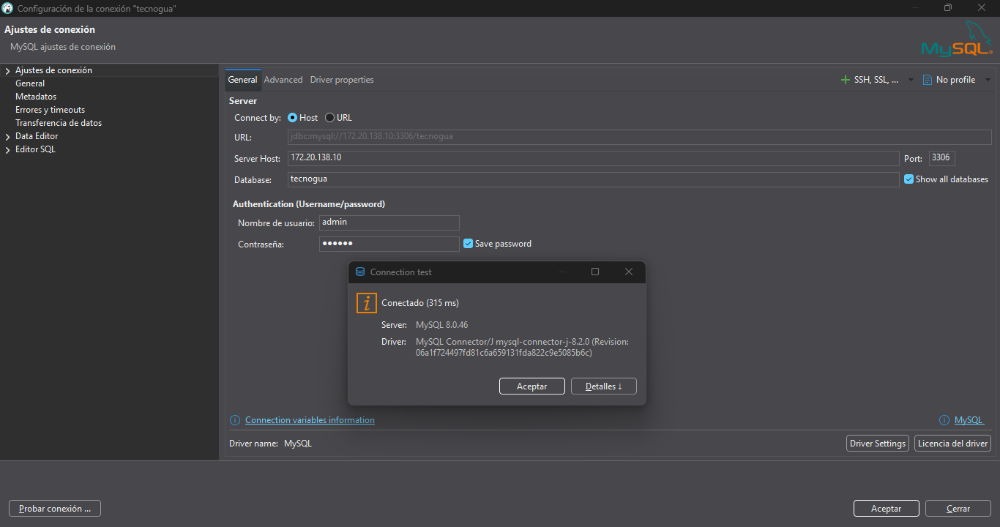
Se verificó que MySQL estuviera disponible y aceptando conexiones mediante el puerto 3306.
nc -zv 127.0.0.1 3306
Resultado obtenido:
Connection to 127.0.0.1 3306 port [tcp/mysql] succeeded!
También se comprobó el acceso al servidor MySQL desde el contenedor utilizando el usuario admin:
sudo docker exec -it mysql-server \
mysql -uadmin -p
Una vez establecida la conexión, se verificó la disponibilidad de las bases de datos mediante:
SHOW DATABASES;
En el resultado se confirmó la existencia de la base de datos tecnogua.
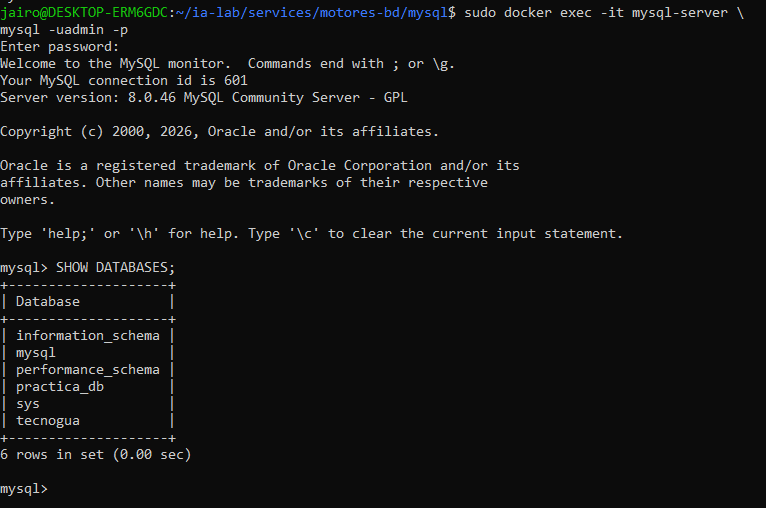
La captura muestra la conexión exitosa al servidor MySQL y la disponibilidad de la base de datos tecnogua.
PostgreSQL se implementó mediante Docker utilizando la imagen postgres:17. El servicio se configuró para permitir conexiones desde el equipo y mantener los datos de forma persistente.
cd ~/ia-lab/services/motores-bd/postgres
cat docker-compose.yml
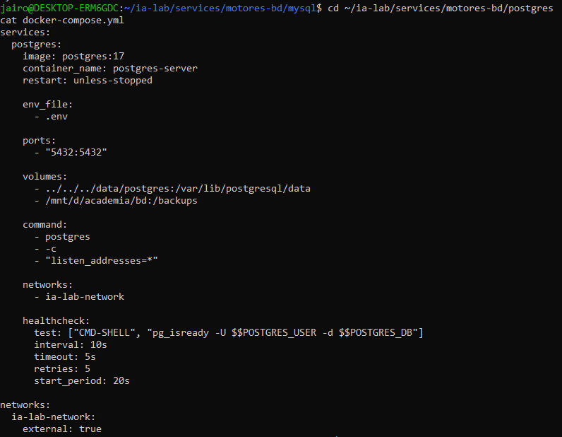
Docker Compose permite definir y administrar el contenedor de PostgreSQL junto con sus parámetros de ejecución.
cd ~/ia-lab/services/motores-bd/postgres
sudo docker compose config
El resultado debe mostrar la configuración del servicio sin errores.
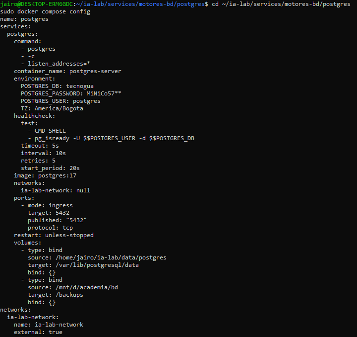
Las credenciales y demás valores de configuración se almacenan en el archivo .env.
cd ~/ia-lab/services/motores-bd/postgres
ls -la
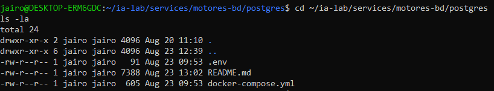
Los datos de PostgreSQL se almacenan en un directorio persistente del proyecto:
ls -lah ~/ia-lab/data/postgres
Esto permite conservar la información de la base de datos cuando el contenedor se detiene o reinicia.
sudo ls -lah ~/ia-lab/data/postgres
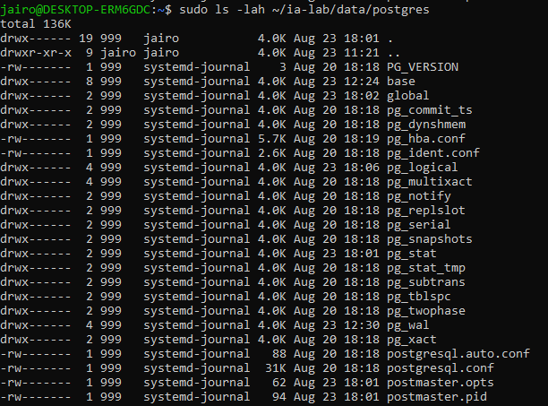
El contenedor utilizado para PostgreSQL es:
postgres-server
Su estado puede comprobarse mediante Docker.
sudo docker ps --filter "name=postgres-server" \
--format "table {{.Names}}\t{{.Image}}\t{{.Status}}\t{{.Ports}}"
El contenedor debe aparecer activo y, después de completar su inicio, en estado healthy.
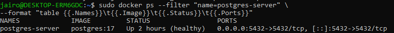
Para las pruebas se utilizó la base de datos:
tecnogua
La existencia de la base de datos puede comprobarse directamente desde PostgreSQL.
sudo docker exec -it postgres-server \
psql -U ialab -l
En el resultado debe aparecer la base de datos tecnogua.
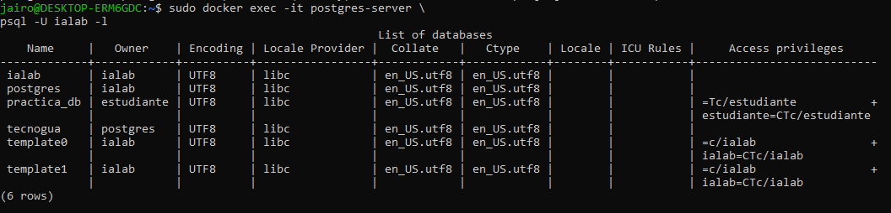
La conexión a PostgreSQL se realizó mediante DBeaver utilizando:
| Parámetro | Valor |
|---|---|
| Motor | PostgreSQL |
| Host | 127.0.0.1 |
| Puerto | 5432 |
| Base de datos | tecnogua |
| Usuario | postgres |
La conexión fue comprobada desde DBeaver y se obtuvo una conexión exitosa.
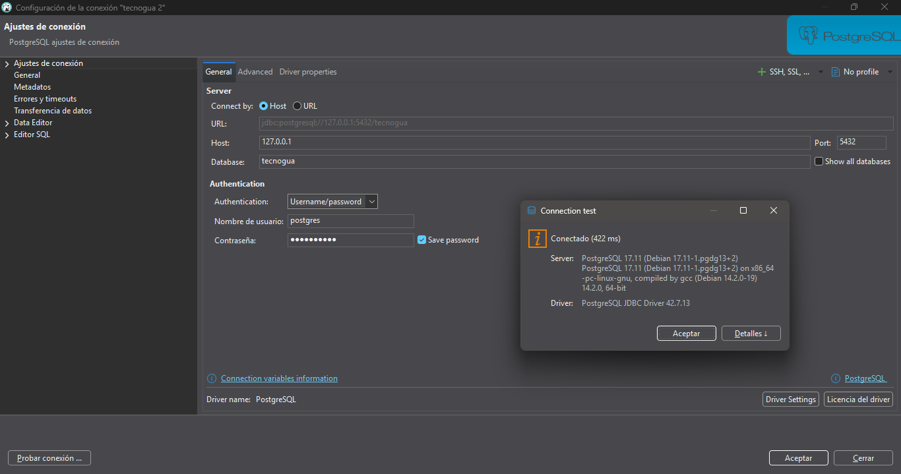
Se verificó que PostgreSQL estuviera disponible mediante el puerto 5432.
nc -zv 127.0.0.1 5432
Resultado esperado:
Connection to 127.0.0.1 5432 port [tcp/postgresql] succeeded!
También se puede comprobar directamente que PostgreSQL responde:
sudo docker exec postgres-server \
pg_isready -U ialab
Resultado esperado:
/var/run/postgresql:5432 - accepting connections
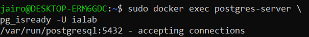
SQL Server se implementó mediante Docker utilizando la imagen mcr.microsoft.com/mssql/server:2022-latest. El servicio se configuró para permitir conexiones desde el equipo y mantener los datos de forma persistente.
cd ~/ia-lab/services/motores-bd/mssql
cat docker-compose.yml
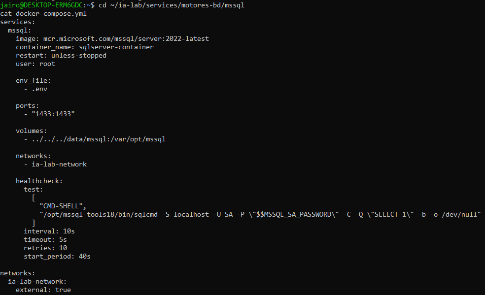
Docker Compose permite definir y administrar el contenedor de SQL Server junto con sus parámetros de ejecución.
cd ~/ia-lab/services/motores-bd/mssql
sudo docker compose config
El resultado debe mostrar la configuración sin errores.
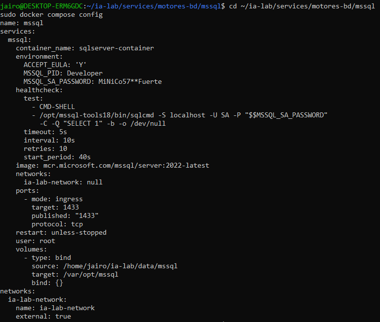
Las credenciales y otros valores de configuración se almacenan en el archivo .env.
cd ~/ia-lab/services/motores-bd/mssql
ls -la
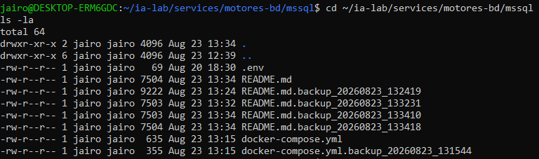
Los datos de SQL Server se almacenan en:
~/ia-lab/data/mssql
Este directorio permite conservar la información de las bases de datos aunque el contenedor sea detenido o reiniciado.
ls -lah ~/ia-lab/data/mssql
Para mostrar la estructura principal:
tree -L 2 ~/ia-lab/data/mssql
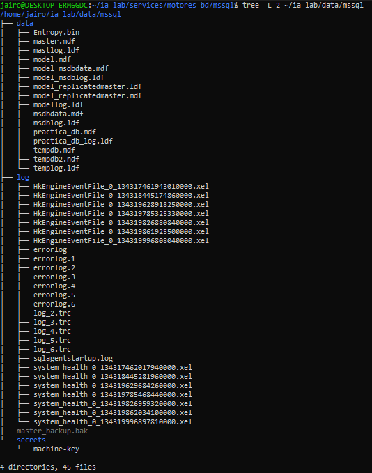
El contenedor utilizado para SQL Server es:
sqlserver-container
Su estado puede comprobarse mediante Docker.
sudo docker ps --filter "name=sqlserver-container" \
--format "table {{.Names}}\t{{.Image}}\t{{.Status}}\t{{.Ports}}"
El contenedor debe aparecer activo y en estado healthy.
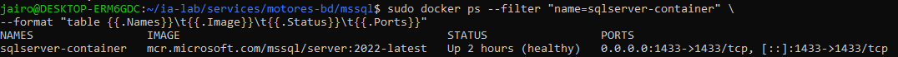
Para las pruebas de SQL Server se utilizó la base de datos:
practica_db
La existencia de la base de datos se comprobó directamente desde el contenedor mediante sqlcmd:
cd ~/ia-lab/services/motores-bd/mssql
set -a
source .env
set +a
sudo docker exec -it sqlserver-container \
/opt/mssql-tools18/bin/sqlcmd \
-S localhost -U SA -P "$MSSQL_SA_PASSWORD" -C \
-Q "SELECT name FROM sys.databases;"
El resultado permite verificar que practica_db se encuentra disponible en el servidor SQL Server.
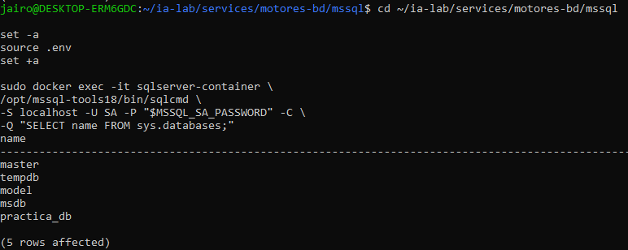
La captura muestra la lista de bases de datos de SQL Server, incluyendo practica_db.
Durante la implementación de SQL Server se generó un archivo de respaldo con el propósito de comprobar el funcionamiento del mecanismo de backup.
El archivo generado fue:
~/ia-lab/data/mssql/master_backup.bak
La existencia del archivo se comprobó mediante el siguiente comando:
sudo ls -lh ~/ia-lab/data/mssql/*.bak
Como resultado, se obtuvo:
-rw-r----- 1 root root 824K Aug 23 10:27 /home/jairo/ia-lab/data/mssql/master_backup.bak
Posteriormente, se verificó la información contenida en el archivo de respaldo mediante la instrucción RESTORE HEADERONLY de SQL Server. Esta consulta permite obtener los metadatos del backup y comprobar la base de datos a la que corresponde.
Para realizar la comprobación se ejecutó:
cd ~/ia-lab/services/motores-bd/mssql
set -a
source .env
set +a
sudo docker exec -it sqlserver-container \
/opt/mssql-tools18/bin/sqlcmd \
-S localhost \
-U SA \
-P "$MSSQL_SA_PASSWORD" \
-C \
-Q "RESTORE HEADERONLY FROM DISK = '/var/opt/mssql/master_backup.bak';" \
-W \
-s "|"
En la salida obtenida se identificaron los campos DatabaseName y BackupTypeDescription. La primera evidencia muestra la existencia del archivo master_backup.bak y la ejecución de RESTORE HEADERONLY sobre dicho respaldo.
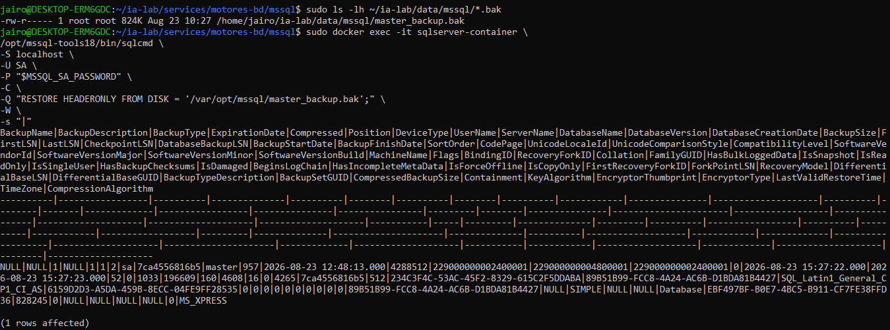
Para facilitar la interpretación de los resultados, se realizó una presentación resumida de los datos obtenidos mediante la siguiente validación:
========================================
VALIDACIÓN DEL BACKUP - SQL SERVER
========================================
DatabaseName : master
BackupTypeDescription : Database
========================================
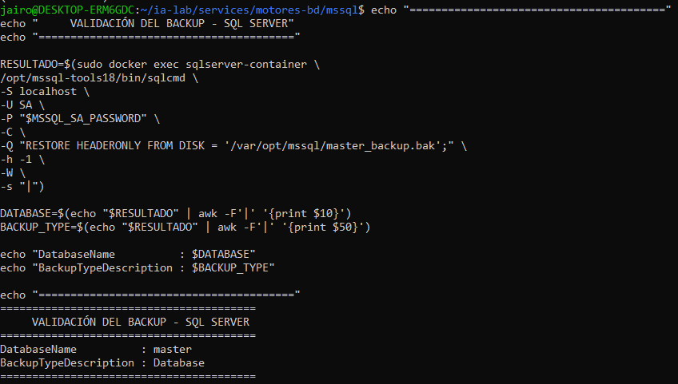
Los resultados permitieron confirmar que el archivo master_backup.bak corresponde a la base de datos master y que el tipo de respaldo registrado es Database. De esta manera, se comprobó el funcionamiento del mecanismo de backup implementado en SQL Server.
La conexión a SQL Server se realizó desde DBeaver utilizando:
| Parámetro | Valor |
|---|---|
| Motor | SQL Server |
| Host | 127.0.0.1 |
| Puerto | 1433 |
| Base de datos | practica_db |
| Usuario | sa |
La conexión fue comprobada desde DBeaver y se obtuvo una conexión exitosa.
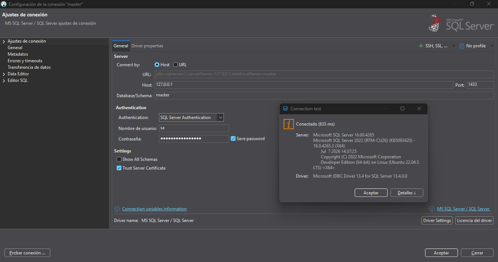
Se verificó que SQL Server estuviera disponible mediante el puerto 1433.
nc -zv 127.0.0.1 1433
Resultado esperado:
Connection to 127.0.0.1 1433 port [tcp/ms-sql-s] succeeded!
También se puede comprobar el estado del contenedor:
sudo docker ps --filter "name=sqlserver-container" \
--format "{{.Names}} - {{.Status}}"
El resultado debe indicar que el contenedor está healthy.
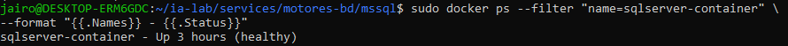
Oracle XE se implementó mediante Docker utilizando la imagen gvenzl/oracle-xe:21-slim. El servicio fue configurado para permitir conexiones desde el equipo y conservar los datos de forma persistente.
cd ~/ia-lab/services/motores-bd/oracle
cat docker-compose.yml
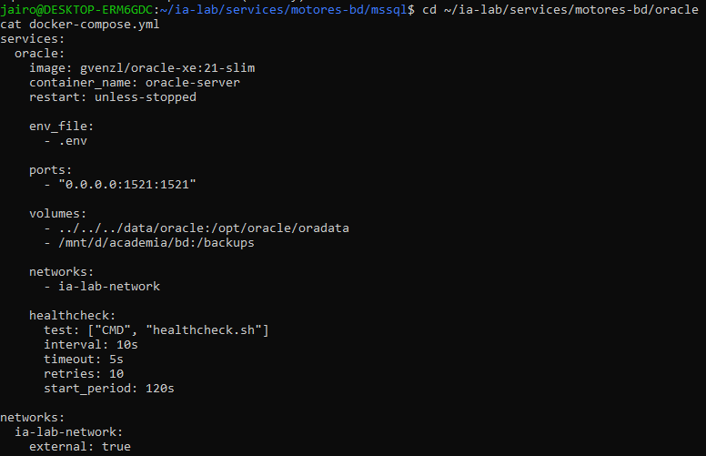
Docker Compose permite definir y administrar el contenedor de Oracle XE junto con sus parámetros de ejecución.
cd ~/ia-lab/services/motores-bd/oracle
sudo docker compose config
La configuración debe mostrarse sin errores.
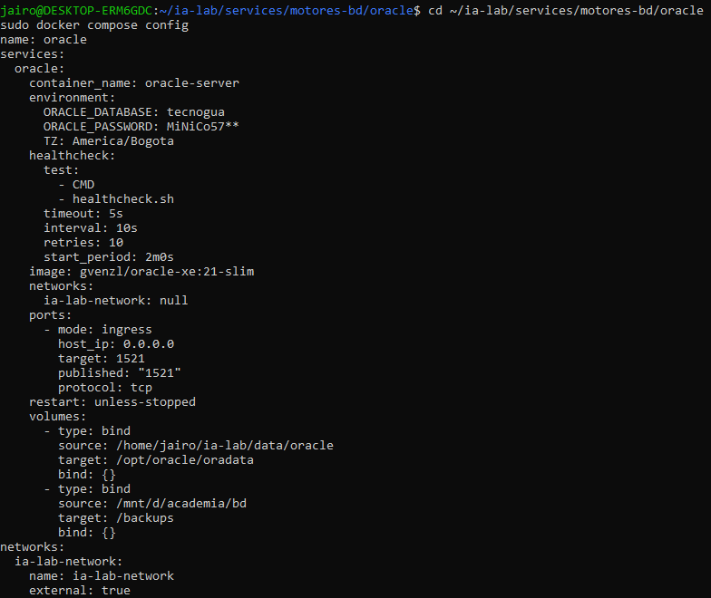
Las credenciales y otros valores de configuración se almacenan en el archivo .env.
cd ~/ia-lab/services/motores-bd/oracle
ls -la
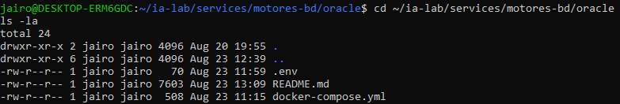
Los datos de Oracle XE se almacenan en:
~/ia-lab/data/oracle
Este directorio permite conservar la información de Oracle aunque el contenedor sea detenido o reiniciado.
ls -lah ~/ia-lab/data/oracle
Para mostrar una estructura más detallada:
sudo tree -L 3 ~/ia-lab/data/oracle
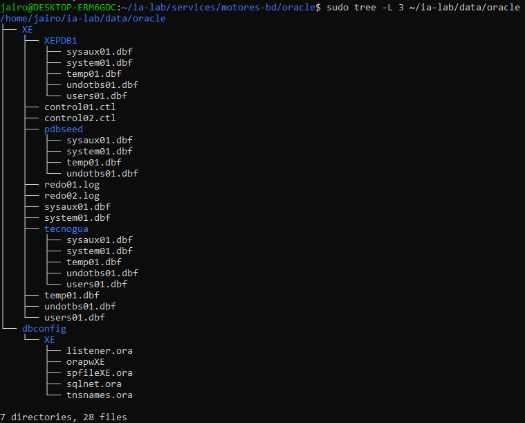
El contenedor de Oracle XE utilizado en el proyecto es:
oracle-server
Su estado puede comprobarse mediante Docker.
sudo docker ps --filter "name=oracle-server" \
--format "table {{.Names}}\t{{.Image}}\t{{.Status}}\t{{.Ports}}"
El contenedor debe aparecer activo y en estado healthy.
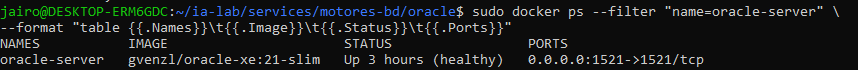
Oracle XE utiliza usuarios administrativos para gestionar la instancia y las bases de datos. Durante la implementación se verificaron los usuarios disponibles y su estado.
La consulta utilizada fue:
cd ~/ia-lab/services/motores-bd/oracle
set -a
source .env
set +a
sudo docker exec -i oracle-server \
sqlplus -s "system/$ORACLE_PASSWORD@//127.0.0.1:1521/XE" <<'SQL'
SET PAGESIZE 100
SET LINESIZE 200
SELECT USERNAME, ACCOUNT_STATUS
FROM DBA_USERS
ORDER BY USERNAME;
EXIT;
SQL
La consulta permitió comprobar los usuarios registrados en Oracle XE y su estado de acceso.
Entre los usuarios que se encuentran activos se identificaron:
USERNAME
----------------
OPS$ORACLE OPEN
SYS OPEN
SYSRAC OPEN
SYSTEM OPEN
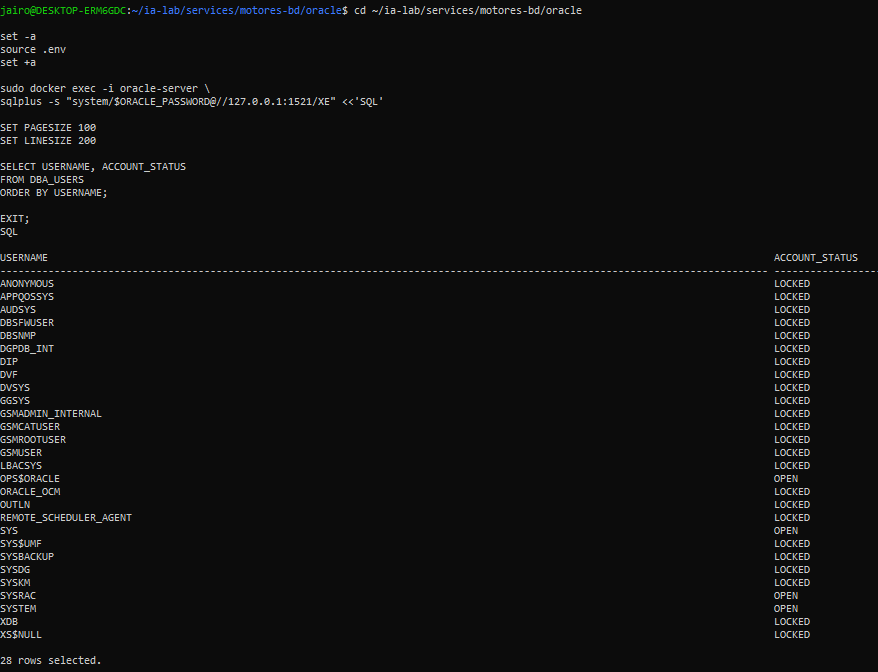
Oracle XE dispone del directorio DATA_PUMP_DIR, utilizado para las operaciones de exportación e importación de datos mediante Oracle Data Pump.
Para verificar la configuración de este directorio, se realizó una consulta sobre la vista DBA_DIRECTORIES utilizando el usuario SYSTEM y la conexión correspondiente a la instancia Oracle XE:
cd ~/ia-lab/services/motores-bd/oracle
set -a
source .env
set +a
sudo docker exec -i oracle-server \
sqlplus -s "system/$ORACLE_PASSWORD@//127.0.0.1:1521/XE" <<'SQL'
SET PAGESIZE 100
SET LINESIZE 200
SELECT DIRECTORY_NAME, DIRECTORY_PATH
FROM DBA_DIRECTORIES
WHERE DIRECTORY_NAME = 'DATA_PUMP_DIR';
EXIT;
SQL
La consulta permitió identificar el nombre del directorio y la ruta física configurada para DATA_PUMP_DIR dentro de la instancia de Oracle XE.
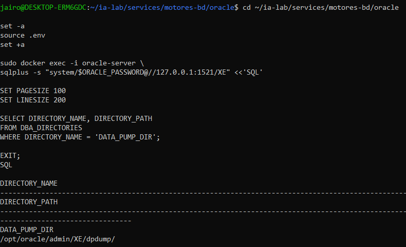
La conexión a Oracle XE se realizó desde DBeaver utilizando:
| Parámetro | Valor |
|---|---|
| Motor | Oracle |
| Host | 127.0.0.1 |
| Puerto | 1521 |
| Servicio | tecnogua |
| Usuario | SYSTEM |
La conexión fue comprobada desde DBeaver y se obtuvo una conexión exitosa.
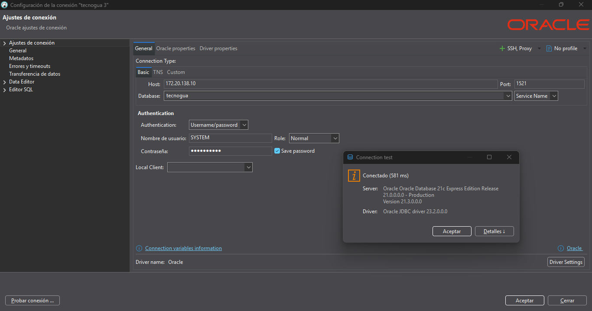
Se verificó que Oracle XE estuviera disponible mediante el puerto 1521.
nc -zv 127.0.0.1 1521
Resultado esperado:
Connection to 127.0.0.1 1521 port [tcp/*] succeeded!
También se comprobó el estado del contenedor:
sudo docker ps --filter "name=oracle-server" \
--format "{{.Names}} - {{.Status}}"
El resultado debe indicar que el contenedor se encuentra healthy.
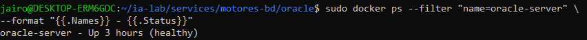
Los cuatro motores de bases de datos se ejecutan de manera simultánea mediante Docker. Cada servicio utiliza su propio contenedor y puerto, permitiendo acceder a ellos desde el equipo y desde herramientas como DBeaver.
Se verificó que los cuatro contenedores se encuentran activos:
mysql-serverpostgres-serversqlserver-containeroracle-serversudo docker ps \
--format "table {{.Names}}\t{{.Image}}\t{{.Status}}\t{{.Ports}}" \
| grep -E "mysql-server|postgres-server|sqlserver-container|oracle-server"
El resultado debe mostrar los cuatro servicios en ejecución y en estado healthy.
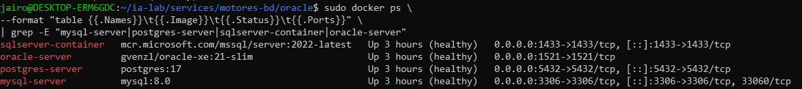
Cada motor utiliza un puerto diferente para recibir conexiones desde el equipo:
| Motor | Contenedor | Puerto |
|---|---|---|
| MySQL | mysql-server |
3306 |
| PostgreSQL | postgres-server |
5432 |
| SQL Server | sqlserver-container |
1433 |
| Oracle XE | oracle-server |
1521 |
Estos puertos permiten establecer las conexiones desde DBeaver utilizando 127.0.0.1.
sudo docker ps \
--format "table {{.Names}}\t{{.Ports}}" \
| grep -E "mysql-server|postgres-server|sqlserver-container|oracle-server"
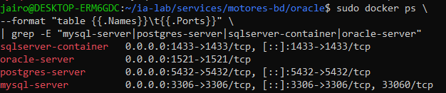
Los servicios utilizan una red de Docker para permitir la comunicación entre los contenedores que forman parte del proyecto.
sudo docker network ls
Para revisar la red utilizada por los servicios:
sudo docker network inspect ia-lab-network
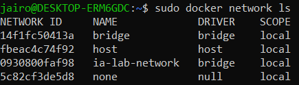
Se realizó una comprobación general del estado de los servicios mediante Docker Compose.
sudo docker compose ls
El resultado debe mostrar los cuatro proyectos:
mssql
mysql
oracle
postgres
También se realizó una validación de la configuración:
cd ~/ia-lab/services/motores-bd
for motor in mysql postgres mssql oracle; do
echo "===== $motor ====="
cd ~/ia-lab/services/motores-bd/$motor
sudo docker compose config >/dev/null && echo "OK"
done
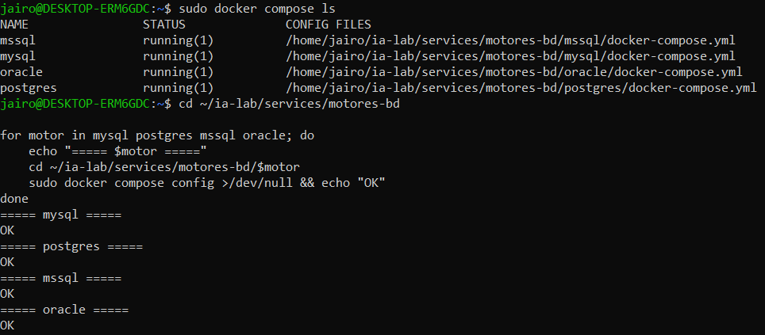
Finalmente, se comprobó que los cuatro puertos se encuentran disponibles para aceptar conexiones.
echo "===== PUERTOS ====="
echo "MySQL 3306:"
nc -zv 127.0.0.1 3306
echo "PostgreSQL 5432:"
nc -zv 127.0.0.1 5432
echo "SQL Server 1433:"
nc -zv 127.0.0.1 1433
echo "Oracle 1521:"
nc -zv 127.0.0.1 1521
El resultado esperado es similar a:
MySQL 3306:
Connection to 127.0.0.1 3306 port [tcp/mysql] succeeded!
PostgreSQL 5432:
Connection to 127.0.0.1 5432 port [tcp/postgresql] succeeded!
SQL Server 1433:
Connection to 127.0.0.1 1433 port [tcp/ms-sql-s] succeeded!
Oracle 1521:
Connection to 127.0.0.1 1521 port [tcp/*] succeeded!
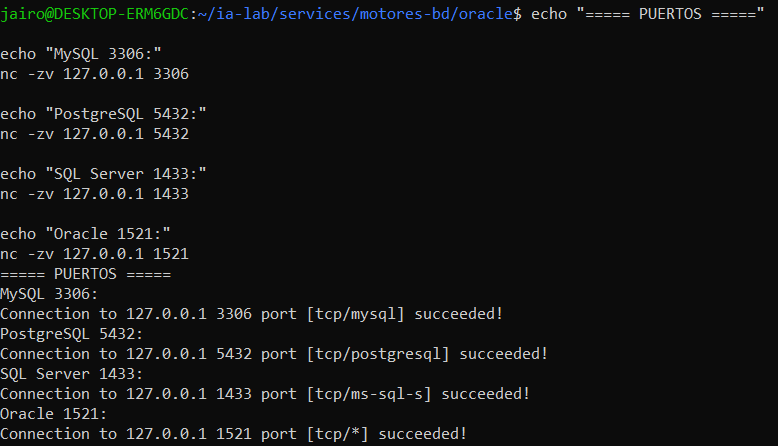
DBeaver se utilizó como cliente gráfico para comprobar la conexión con los cuatro motores de bases de datos. Las conexiones se realizaron utilizando 127.0.0.1 y los puertos publicados por Docker.
La conexión a MySQL se realizó mediante DBeaver utilizando el puerto 3306.
Configuración utilizada:
127.0.0.13306admintecnogua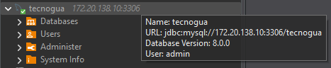
La conexión a PostgreSQL se realizó mediante DBeaver utilizando el puerto 5432.
Configuración utilizada:
127.0.0.15432postgrestecnogua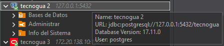
La conexión a SQL Server se realizó mediante DBeaver utilizando el puerto 1433.
Configuración utilizada:
127.0.0.11433samaster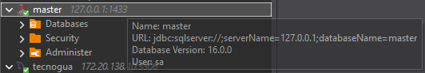
La conexión a Oracle XE se realizó mediante DBeaver utilizando el puerto 1521.
Configuración utilizada:
127.0.0.11521SYSTEMtecnogua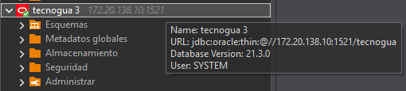
Después de configurar las cuatro conexiones, se verificó desde DBeaver que todos los motores estuvieran disponibles simultáneamente.
El resultado esperado es que las cuatro conexiones aparezcan activas y sin errores.
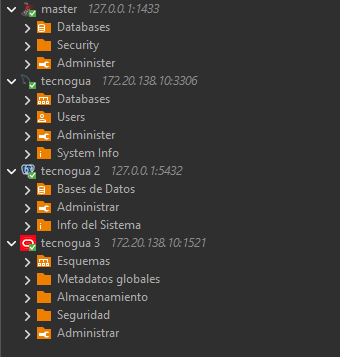
La persistencia permite conservar los datos de las bases de datos aunque los contenedores sean detenidos o reiniciados. Para esto, cada motor utiliza un directorio del proyecto ia-lab/data.
MySQL utiliza el directorio:
~/ia-lab/data/mysql
Este directorio está asociado al almacenamiento de datos del contenedor mediante Docker.
Verificación del directorio:
sudo ls -lah ~/ia-lab/data/mysql
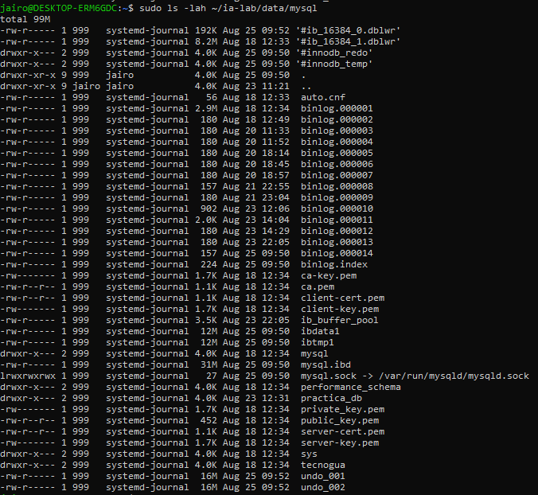
PostgreSQL utiliza el directorio:
~/ia-lab/data/postgres
Este directorio permite conservar los datos de PostgreSQL fuera del ciclo de vida del contenedor.
Verificación del directorio:
sudo ls -lah ~/ia-lab/data/postgres
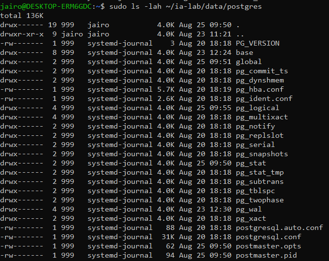
SQL Server utiliza el directorio:
~/ia-lab/data/mssql
Dentro de este directorio se encuentran los archivos de datos y registros utilizados por SQL Server.
Verificación:
ls -lah ~/ia-lab/data/mssql
También se puede comprobar el directorio de datos:
sudo ls -lah ~/ia-lab/data/mssql/data
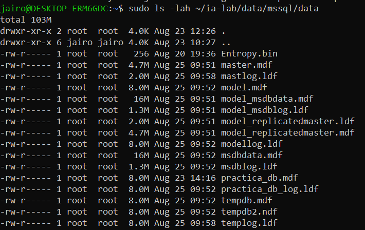
Oracle XE utiliza el directorio:
~/ia-lab/data/oracle
Este directorio contiene los archivos necesarios para conservar la información y configuración de Oracle.
Verificación:
sudo ls -lah ~/ia-lab/data/oracle
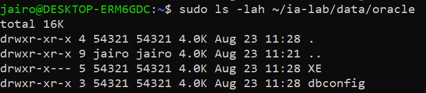
La estructura de almacenamiento persistente utilizada por los cuatro motores es:
ia-lab/
└── data/
├── mysql/
├── postgres/
├── mssql/
└── oracle/
Esta configuración permite mantener los datos separados de los contenedores y conservarlos durante reinicios de los servicios.
cd ~/ia-lab
sudo tree -L 1 data
Los backups permiten conservar una copia de la información de una base de datos y utilizarla posteriormente para recuperar los datos en caso de pérdida o daño.
Se realizó un respaldo de la base de datos de SQL Server utilizando un archivo con extensión .bak.
El archivo de respaldo se encuentra dentro del almacenamiento persistente del proyecto:
~/ia-lab/data/mssql/master_backup.bak
Verificación del backup:
sudo ls -lh ~/ia-lab/data/mssql/master_backup.bak
El directorio de SQL Server contiene el archivo de respaldo junto con los archivos utilizados por el motor.
Para comprobar su contenido se ejecutó:
sudo ls -lah ~/ia-lab/data/mssql
El backup se almacena dentro del directorio persistente de SQL Server:
~/ia-lab/data/mssql
Este directorio se encuentra asociado al almacenamiento utilizado por el contenedor de SQL Server, permitiendo conservar los archivos fuera del ciclo de vida del contenedor.
Verificación:
cd ~/ia-lab/services/motores-bd/mssql
sudo grep -n -A 8 -B 3 "volumes:" docker-compose.yml
El archivo .bak permite realizar una recuperación de la base de datos mediante las herramientas de SQL Server.
El backup debe conservarse en un almacenamiento persistente y verificarse periódicamente para asegurar que pueda utilizarse cuando sea necesario.
La eliminación de los volúmenes de Docker puede provocar la pérdida de los datos almacenados en ellos, por lo que se recomienda conservar los archivos de respaldo de forma independiente.
cd ~/ia-lab/data/mssql
sudo ls -lh master_backup.bak
Después:
cd ~/ia-lab/data/mssql
sudo ls -lah
Y para demostrar que Docker realmente está utilizando ese directorio:
cd ~/ia-lab/services/motores-bd/mssql
sudo grep -n -A 8 -B 3 "volumes:" docker-compose.yml
El .bak constituye el respaldo disponible para una recuperación posterior.
Para facilitar la administración de los cuatro motores se crearon dos scripts que permiten iniciar y detener los servicios de Docker de forma centralizada.
El script start-all.sh permite iniciar los cuatro motores de bases de datos utilizando sus respectivos archivos docker-compose.yml.
Ubicación:
~/ia-lab/services/motores-bd/start-all.sh
Para consultar su contenido:
cd ~/ia-lab/services/motores-bd
sudo cat start-all.sh
Para ejecutarlo:
cd ~/ia-lab/services/motores-bd
./start-all.sh
Después se puede comprobar el estado de los contenedores:
sudo docker ps
El script stop-all.sh permite detener los servicios de los cuatro motores.
Ubicación:
~/ia-lab/services/motores-bd/stop-all.sh
Para consultar su contenido:
cd ~/ia-lab/services/motores-bd
cat stop-all.sh
Para ejecutarlo:
cd ~/ia-lab/services/motores-bd
./stop-all.sh
El estado de los servicios puede comprobarse con:
sudo docker ps
Durante la administración del proyecto se utilizaron principalmente los siguientes comandos:
# Iniciar todos los motores
cd ~/ia-lab/services/motores-bd
./start-all.sh
# Detener todos los motores
cd ~/ia-lab/services/motores-bd
./stop-all.sh
# Ver contenedores activos
sudo docker ps
# Ver todos los contenedores
sudo docker ps -a
# Ver los proyectos Docker Compose
sudo docker compose ls
# Verificar la configuración de un motor
sudo docker compose config
# Ver los logs de un contenedor
sudo docker logs mysql-server --tail 50
# Verificar los puertos
nc -zv 127.0.0.1 3306
nc -zv 127.0.0.1 5432
nc -zv 127.0.0.1 1433
nc -zv 127.0.0.1 1521
Estos comandos permitieron iniciar, detener, revisar y verificar el funcionamiento de los servicios durante la implementación.
Se realizó una validación general del proyecto para comprobar que los cuatro motores de bases de datos, sus contenedores, puertos y conexiones funcionaran correctamente.
Se verificó la configuración de Docker Compose de cada motor mediante:
cd ~/ia-lab/services/motores-bd
echo "===== MYSQL ====="
cd mysql
sudo docker compose config > /tmp/mysql-compose-config.yml
echo "MySQL: $([ -s /tmp/mysql-compose-config.yml ] && echo OK || echo ERROR)"
echo ""
echo "===== POSTGRESQL ====="
cd ../postgres
sudo docker compose config > /tmp/postgres-compose-config.yml
echo "PostgreSQL: $([ -s /tmp/postgres-compose-config.yml ] && echo OK || echo ERROR)"
echo ""
echo "===== SQL SERVER ====="
cd ../mssql
sudo docker compose config > /tmp/mssql-compose-config.yml
echo "SQL Server: $([ -s /tmp/mssql-compose-config.yml ] && echo OK || echo ERROR)"
echo ""
echo "===== ORACLE ====="
cd ../oracle
sudo docker compose config > /tmp/oracle-compose-config.yml
echo "Oracle: $([ -s /tmp/oracle-compose-config.yml ] && echo OK || echo ERROR)"
El resultado obtenido fue:
MySQL: OK
PostgreSQL: OK
SQL Server: OK
Oracle: OK
Se comprobó que los cuatro contenedores estuvieran ejecutándose y en estado healthy.
Comando utilizado:
sudo docker ps \
--format "table {{.Names}}\t{{.Status}}\t{{.Ports}}"
El resultado esperado es similar a:
NAMES STATUS
sqlserver-container Up ... (healthy)
oracle-server Up ... (healthy)
postgres-server Up ... (healthy)
mysql-server Up ... (healthy)
Se verificó que los puertos publicados por Docker estuvieran disponibles desde el sistema.
echo "===== PUERTOS ====="
echo "MySQL 3306:"
nc -zv 127.0.0.1 3306
echo "PostgreSQL 5432:"
nc -zv 127.0.0.1 5432
echo "SQL Server 1433:"
nc -zv 127.0.0.1 1433
echo "Oracle 1521:"
nc -zv 127.0.0.1 1521
El resultado obtenido fue:
MySQL 3306:
Connection to 127.0.0.1 3306 port [tcp/mysql] succeeded!
PostgreSQL 5432:
Connection to 127.0.0.1 5432 port [tcp/postgresql] succeeded!
SQL Server 1433:
Connection to 127.0.0.1 1433 port [tcp/ms-sql-s] succeeded!
Oracle 1521:
Connection to 127.0.0.1 1521 port [tcp/*] succeeded!
Finalmente, se verificaron las conexiones desde DBeaver. Los cuatro motores fueron conectados correctamente y se mostraron activos.
Los motores comprobados fueron:
Evidencia:
La validación final confirmó el correcto funcionamiento de la implementación:
| Elemento | Resultado |
|---|---|
| MySQL | OK |
| PostgreSQL | OK |
| SQL Server | OK |
| Oracle XE | OK |
| Docker Compose | OK |
| Contenedores | Healthy |
| Puertos | Disponibles |
| Conexiones DBeaver | Correctas |
En conclusión, los cuatro motores de bases de datos quedaron configurados, ejecutándose mediante Docker y disponibles para conexión desde DBeaver.
La estructura final del proyecto se organizó separando los servicios de Docker de los datos persistentes generados por los motores de bases de datos.
La estructura principal del proyecto se distribuye en los directorios data/ y services/motores-bd/.
El directorio data/ contiene los directorios utilizados para almacenar los datos persistentes de los diferentes motores de bases de datos, así como los respaldos generados durante la implementación.
ia-lab/
└── data/
├── mssql/
├── mysql/
├── oracle/
├── oracle_backup_20260823/
├── oracle_old_20260823/
├── postgres/
└── postgres_backup_20260823/
La estructura anterior se comprobó mediante el comando:
cd ~/ia-lab
tree data -L 1
Evidencia del directorio data/:
El directorio services/motores-bd/ contiene las configuraciones de los servicios Docker correspondientes a MySQL, PostgreSQL, SQL Server y Oracle. Cada motor cuenta con su archivo de variables de entorno, documentación y configuración de Docker Compose.
services/
└── motores-bd/
├── README.md
├── mysql/
│ ├── .env
│ ├── README.md
│ └── docker-compose.yml
├── postgres/
│ ├── .env
│ ├── README.md
│ └── docker-compose.yml
├── mssql/
│ ├── .env
│ ├── README.md
│ └── docker-compose.yml
├── oracle/
│ ├── .env
│ ├── README.md
│ └── docker-compose.yml
├── start-all.sh
└── stop-all.sh
La estructura se comprobó mediante:
tree -a ~/ia-lab/services/motores-bd -L 2
La opción -a permite incluir archivos ocultos como .env, mientras que -L 2 limita la profundidad mostrada para facilitar la lectura de la estructura.
Evidencia del directorio services/motores-bd/:
Nota: Los directorios de
data/contienen los archivos generados por los motores de bases de datos y sus respaldos. Por esta razón, en la evidencia se muestran únicamente sus directorios principales, evitando incluir el contenido interno de los datos persistentes.
| Directorio | Descripción |
|---|---|
data/ |
Contiene los datos persistentes de los motores. |
services/motores-bd/ |
Contiene la configuración y administración de los servicios. |
mysql/ |
Configuración del contenedor de MySQL. |
postgres/ |
Configuración del contenedor de PostgreSQL. |
mssql/ |
Configuración del contenedor de SQL Server. |
oracle/ |
Configuración del contenedor de Oracle XE. |
.env |
Contiene variables de entorno utilizadas por cada servicio. |
docker-compose.yml |
Define la configuración de cada contenedor. |
start-all.sh |
Inicia los cuatro motores. |
stop-all.sh |
Detiene los cuatro motores. |
README.md |
Documenta la configuración y funcionamiento de los servicios. |
La estructura permite mantener organizados los archivos de configuración, los datos persistentes y los scripts de administración del proyecto.
La implementación permitió configurar y ejecutar correctamente cuatro motores de bases de datos: MySQL, PostgreSQL, SQL Server y Oracle XE, utilizando Docker sobre WSL.
Se comprobó que los servicios funcionan correctamente, mantienen sus datos mediante almacenamiento persistente y pueden ser administrados desde DBeaver.
También se verificaron los puertos, las conexiones y el estado de los contenedores, además de realizar un backup de SQL Server.
Finalmente, se logró una estructura organizada del proyecto, con archivos de configuración, documentación y scripts para facilitar la administración de los servicios.